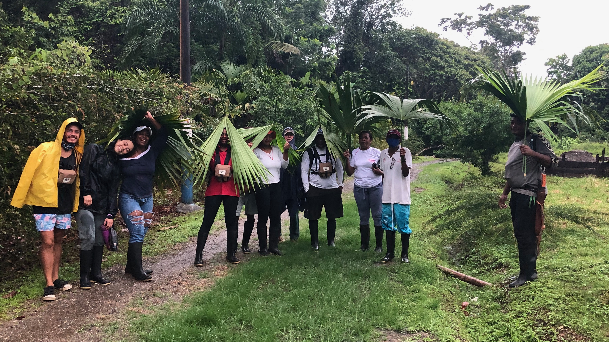
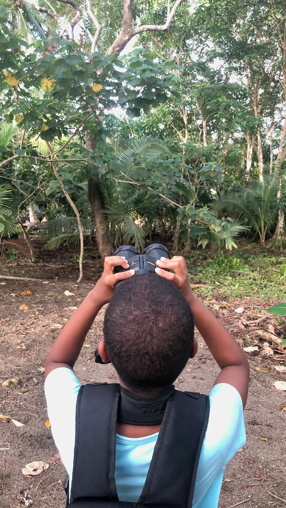
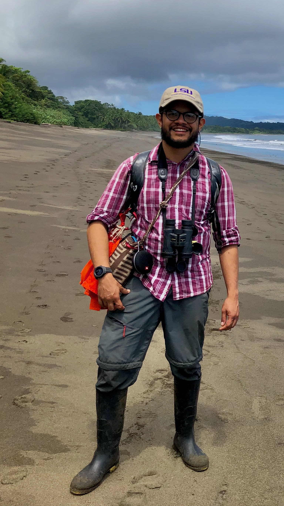
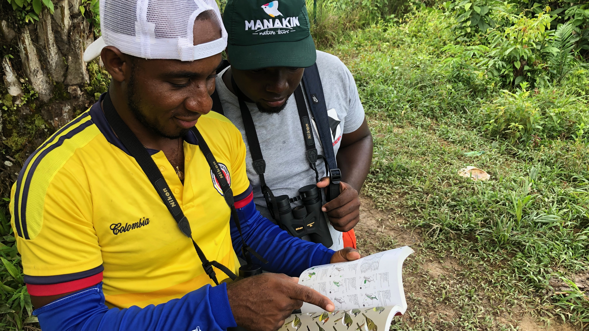
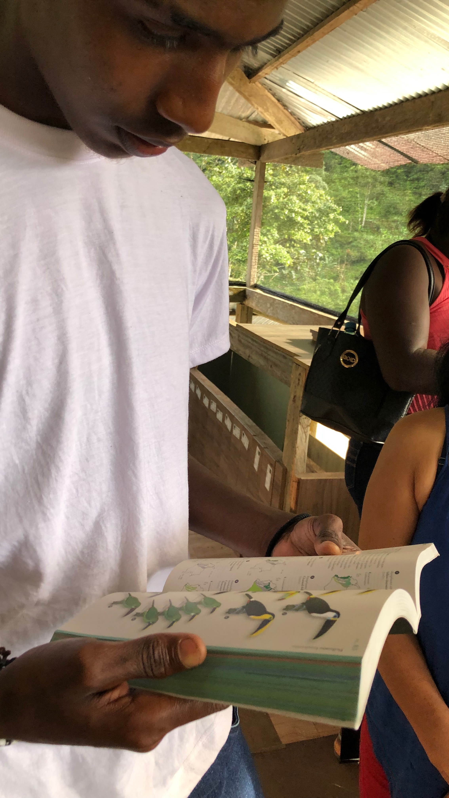
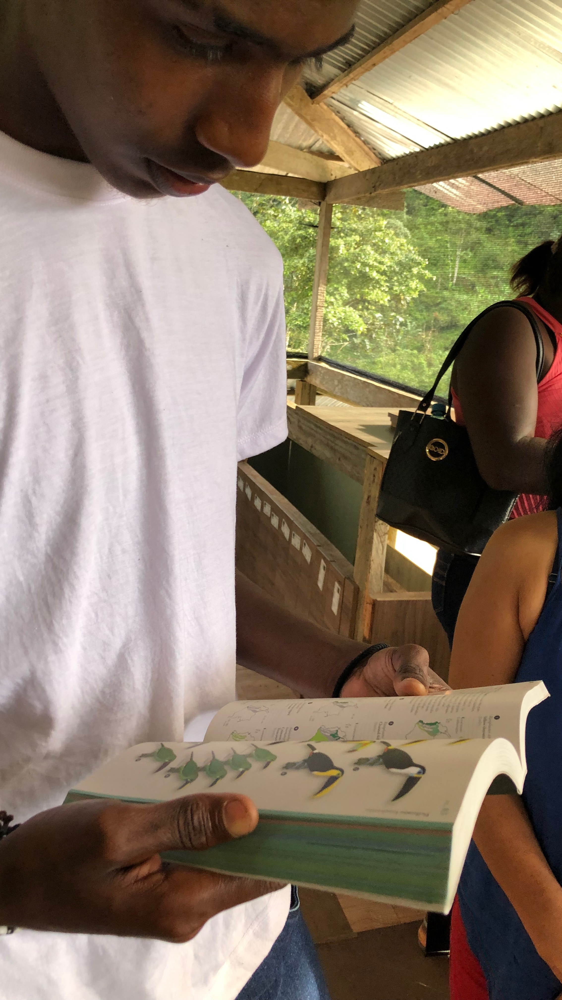
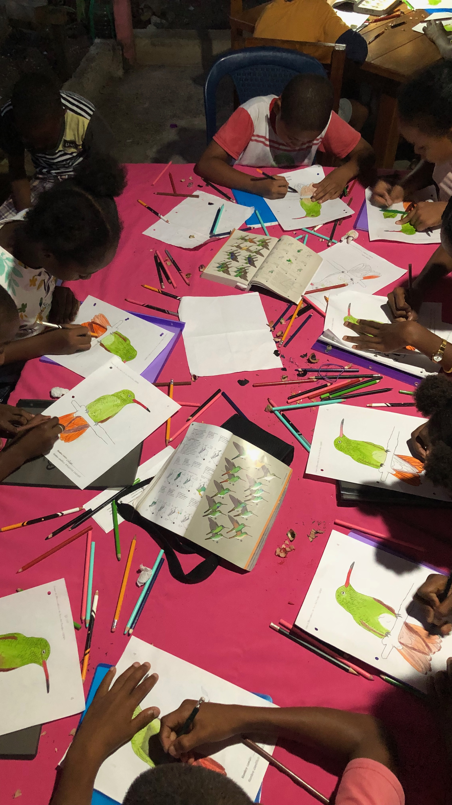
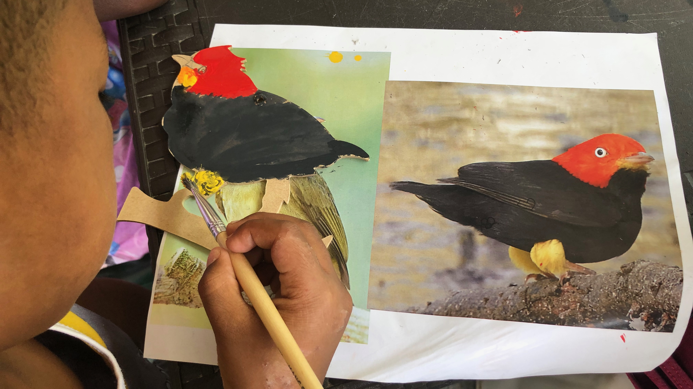

Pacific region of Colombia - 2022
The Chocó–Darién moist forests is the rainiest places on earth [1], and it is a remarkable biodiversity hotspot. It is home to various endemic species, such as the Bucco noanamae (Sooty-capped Puffbird, locally known as “aguanta-piedra,” meaning “rock-resistor”) and Phyllobates terribilis (Golden Poison Frog or “rana dardo dorada,” meaning “golden dart frog”), one of the most poisonous animals globally [2] Despite its stunning natural beauty, this region of Colombia has faced a troubling history of violence and political corruption, resulting in challenging living conditions for local communities. These communities often have limited access to information and basic services such as healthcare and education.
During my Ph.D., I had the privilege of conducting fieldwork in this beautiful Pacific region of Colombia, which encompasses much of the Chocó–Darién moist forests. I visited for the first time in 2022 and with collaboration of the biologist and artist Valentina Nieto and the biologist Nelsy Niño, we organized a series of workshops for both adults and children, with a focus on birds.
For the adults, we held workshops that included theoretical and practical exercises in birdwatching. We donated binoculars and field guides to the local communities and provided training on how to use these tools effectively. Our workshops also covered conservation topics and alternative ways to appreciate their rich biodiversity. This initiative has been successful in cultivating local interest and expertise in birdwatching. Many participants have become skilled birdwatchers, which has greatly facilitated my fieldwork. Some have even begun guiding tourists and are eager to engage in national birdwatching events to broaden their knowledge and network.
 

For the children, we organized art workshops where they learned basic coloring and painting techniques by creating images of local birds. Throughout the process, we shared natural history facts about these bird species to enrich their understanding. By focusing on common, easily spotted birds in each locality, we aimed to spark their enthusiasm for birdwatching. This approach encouraged the children to share their own observations and stories about these birds and other wildlife they had encountered. Our goal is to continue collaborating with them, fostering a connection to their local biodiversity and supporting their growth as future stewards of the environment.
We have now established the GOAP – Grupo de Observadores de Aves del Pacífico (Pacific Birdwatchers Group) and plan to continue supporting local communities, even after my field expeditions have concluded. To learn more about this group and our ongoing activities, please follow our Instagram account, where we share updates and promote local tourism.